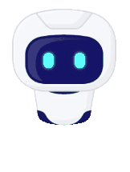

DeepSpace Voyager
Acasă
Descoperă
Despre
Contact
Mai întâi, vrem să știm mai multe despre tine...

--Alege--
Peste 1.500 M$
Sub 1.500 M$
Variabil
--Alege--
Sejur la un Hotel Spațial
Business
Tur în jurul unor obiective spațiale
Cercetare
Interrelaționare cu alte entități
--Alege--
Turism în Sistemul nostru Solar
Călătorii Intergalactice